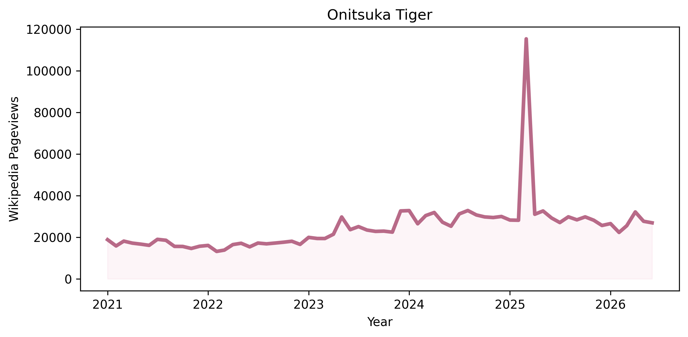

attention and growth measure different things
matcha received the highest average attention, while jorts experienced the strongest percentage growth. large audiences and rapid momentum are not always the same.
a data science exploration
exploring consumer desire through digital attention
this project explores how online attention can reveal changing patterns in fashion, food, lifestyle, and internet culture.
five representative trends were selected to compare different forms of consumer attention across fashion, food, lifestyle, and internet culture. click a trend to explore its attention profile.
featured trend
Onitsuka Tiger represents growing international attention toward Japanese fashion. Its pageviews increased across the study period, although online attention alone cannot explain what caused that growth.

overall findings
matcha received the highest average attention, while jorts experienced the strongest percentage growth. large audiences and rapid momentum are not always the same.
uniqlo and onitsuka tiger maintained relatively consistent attention across the study period, suggesting longer-term visibility instead of short-lived spikes.
digital cameras and matcha both demonstrate that online attention fluctuates over time. popularity should therefore be interpreted as dynamic rather than permanent.
methodology
monthly Wikipedia pageviews were collected for five consumer trends from 2021 through 2026.
python, pandas, and matplotlib were used to calculate average attention, peak attention, percentage growth, and long-term consumer interest patterns.
Wikipedia pageviews reflect public online attention rather than purchasing behavior. The results identify changes in visibility but cannot determine why those changes occurred.